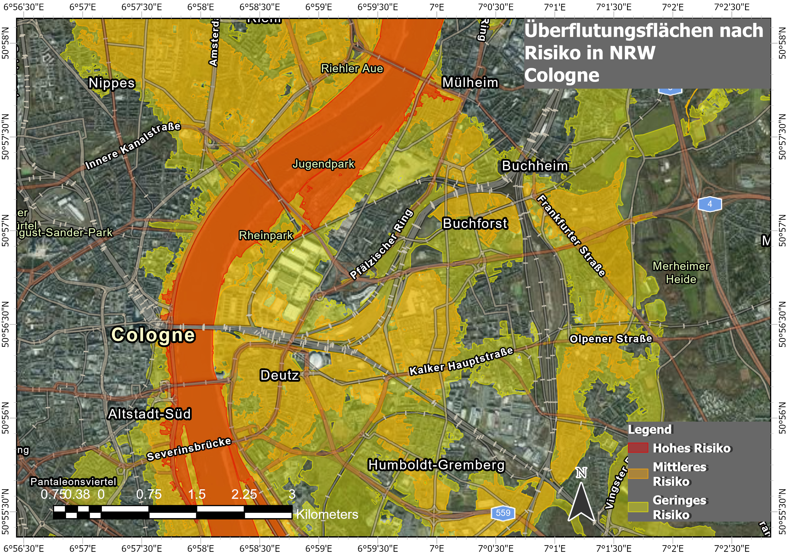
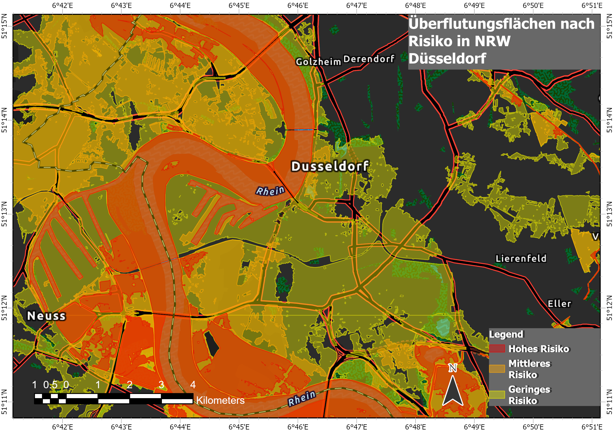

🚆LIVE
2026
Dutch Public Transport – Real-Time WebGIS
~2,000 buses, trams, metros and ferries tracked live across the Netherlands, refreshed every 9 s (GTFS-Realtime, installable PWA).
Open live app →
Explore where floods can occur in North Rhine-Westphalia, classified by risk level. Switch layers on and off, highlight individual risk classes in the interactive legend and jump to cities along the Rhine.

See the flood-risk areas of NRW over the terrain. Launch the 3D scene, then change the camera angle with the presets or navigate freely.
The scene is loaded only when you click, to keep this page fast.
Switch between the default oblique view, a top-down view, a low angle and a north-up view of the same location.
Pan, rotate, tilt and zoom to follow rivers and see how flood areas relate to the terrain and settlements.
Use “Open in ArcGIS” for the full scene viewer with its own layer list and tools.
Cartographic layouts and visual analyses of the flood-risk project. Click an image to enlarge, then use ← → to browse.


Show which areas in North Rhine-Westphalia can be flooded and how high the risk is, in a clear, interactive and shareable web map.
North Rhine-Westphalia (NRW), Germany's most populous federal state, crossed by the Rhine, Ruhr, Lippe, Sieg, Erft and many other rivers.
NRW was strongly affected by the July 2021 floods. Risk maps support awareness, spatial planning and emergency preparedness.
This page uses the ArcGIS Maps SDK map components and reads layers and legend classes directly from the web map.
The map uses three flood-risk classes:
Click it in the legend. The other areas fade out. Click again, or press Reset, to return to normal.
Yes. Click an area on the map to open its pop-up, or use the search box to find an address or town.
No. This is an educational GIS portfolio project built from BfG data. For decisions about properties or planning, consult the official flood-hazard maps of the responsible authorities.
Geoscientist specialized in applied geomatics. I combine geology with advanced geospatial tools (GIS, remote sensing, spatial analysis) to turn complex data into thematic maps and environmental decision-support solutions. 📍 Casablanca, Morocco · Master's student at Université Hassan II.
3D modelling of the Igoudrane deposit in Datamine; spatial analysis and thematic mapping with ArcGIS Pro and QGIS.
Club website, social networks, digital marketing and web data analysis.
GIS, remote sensing, geostatistics, spatial databases, webmapping, AI for geosciences, natural hazards.
More webmapping and GIS work.
~2,000 buses, trams, metros and ferries tracked live across the Netherlands, refreshed every 9 s (GTFS-Realtime, installable PWA).
Open live app →Optimal itineraries on the T1–T4, BW1, BW2 network with official transfers, 2D/3D views, OSRM walking route, PDF and WhatsApp sharing.
Open live app →Density heat map per station, adjustable radius, 3 basemaps, clustering and the 13 official transfers. Data: OpenStreetMap via Overpass QL.
Open live app →Seismic susceptibility mapping using ArcGIS Pro and Python.
See on GitHub →A collection of interactive maps and GIS analyses on my ArcGIS Online profile.
Open ArcGIS profile →Questions about the flood-risk map, or interested in a GIS collaboration or internship?